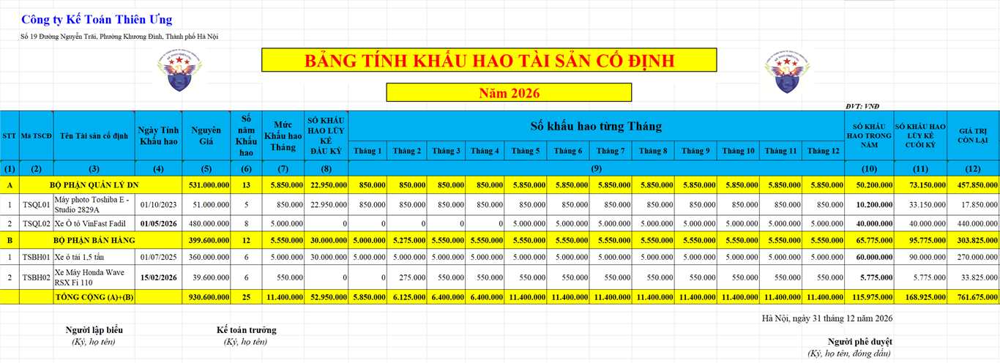
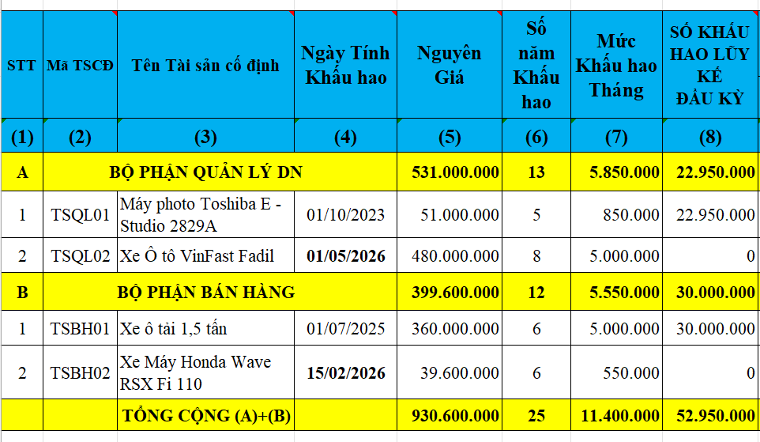
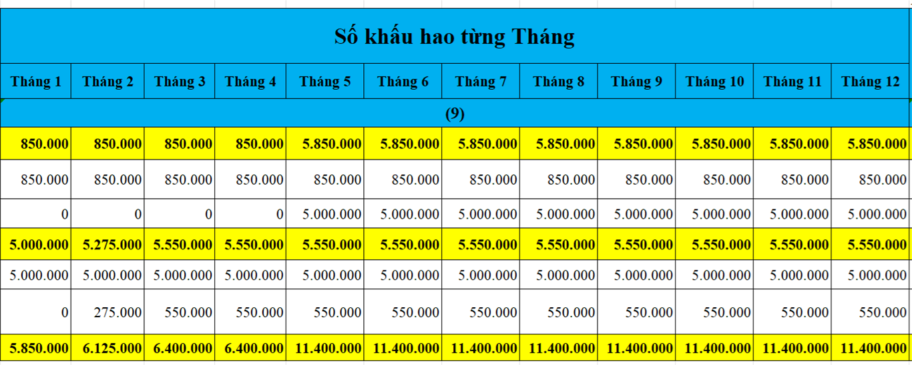
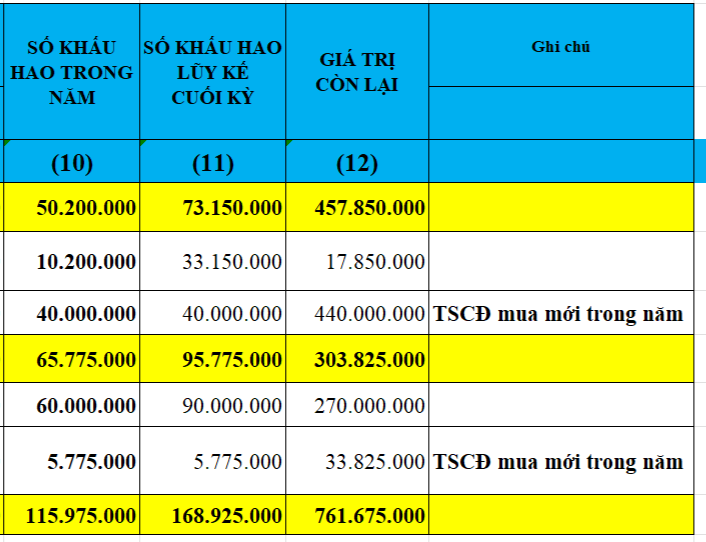

Theo quy định tại chế độ kế toán của Thông tư 99/2025/TT-BTC và thông tư 133/2016/TT-BTC thì định kỳ doanh nghiệp sẽ thực hiện tính, trích khấu hao TSCĐ vào chi phí sản xuất, kinh doanh, chi phí khác
Dưới đây, Công ty đào tạo Kế Toán Diệu Tâm sẽ cung cấp cho các bạn Mẫu bảng trích khấu hao tài sản cố định trên Excel mới nhất năm 2026

Để các bạn nhìn rõ thông tin trên bảng trích khấu hao tài sản cố định trên đây thì Công ty đào tạo Kế Toán Diệu Tâm sẽ chia bảng trích khấu hao tài sản cố định ra làm 3 phân như sau:


(Bảng tính này, Công ty Kế Toán Diệu Tâm đang trích khấu hao TSCĐ theo phương pháp đường thằng (Ngoại trừ tháng đầu tiên và tháng cuối cùng thì các tháng còn lại: giá trị khấu hao tại mỗi tháng đều như nhau)

Khi thực hiện trích khấu hao tài sản cố định thì Kế Toán Diệu Tâm lưu ý với các bạn 1 vài thông tin sau:
Về nguyên tắc, mọi TSCĐ, BĐSĐT dùng để cho thuê của doanh nghiệp có liên quan đến sản xuất, kinh doanh (gồm cả tài sản chưa dùng, không cần dùng, chờ thanh lý) đều phải trích khấu hao theo quy định hiện hành. Khấu hao TSCĐ dùng trong sản xuất, kinh doanh và khấu hao BĐSĐT hạch toán vào chi phí sản xuất, kinh doanh trong kỳ; khấu hao TSCĐ chưa dùng, không cần dùng, chờ thanh lý hạch toán vào chi phí khác. Các trường hợp đặc biệt không phải trích khấu hao (như TSCĐ dự trữ, TSCĐ dùng chung cho xã hội...), doanh nghiệp phải thực hiện theo quy định của pháp luật hiện hành. Đối với TSCĐ dùng cho hoạt động sự nghiệp, dự án hoặc dùng vào mục đích phúc lợi thì không phải trích khấu hao tính vào chi phí sản xuất, kinh doanh mà chỉ tính hao mòn TSCĐ và hạch toán giảm nguồn hình thành TSCĐ đó.
Căn cứ vào quy định của pháp luật và yêu cầu quản lý của doanh nghiệp để lựa chọn 1 trong các phương pháp tính, trích khấu hao theo quy định của pháp luật phù hợp cho từng TSCĐ, BĐSĐT nhằm kích thích sự phát triển sản xuất, kinh doanh, đảm bảo việc thu hồi vốn nhanh, đầy đủ và phù hợp với khả năng trang trải chi phí của doanh nghiệp.
Phương pháp khấu hao được áp dụng cho từng TSCĐ, BĐSĐT phải được thực hiện nhất quán và có thể được thay đổi khi có sự thay đổi đáng kể cách thức thu hồi lợi ích kinh tế của TSCĐ và BĐSĐT.
Thời gian khấu hao và phương pháp khấu hao TSCĐ phải được xem xét lại ít nhất là vào cuối mỗi năm tài chính. Nếu thời gian sử dụng hữu ích ước tính của tài sản khác biệt lớn so với các ước tính trước đó thì thời gian khấu hao phải được thay đổi tương ứng. Phương pháp khấu hao TSCĐ được thay đổi khi có sự thay đổi đáng kể cách thức ước tính thu hồi lợi ích kinh tế của TSCĐ. Trường hợp này, phải điều chỉnh chi phí khấu hao cho năm hiện hành và các năm tiếp theo, và được thuyết minh trong Báo cáo tài chính.
Đối với các TSCĐ đã khấu hao hết (đã thu hồi đủ vốn), nhưng vẫn còn sử dụng vào hoạt động sản xuất, kinh doanh thì không được tiếp tục trích khấu hao. Các TSCĐ chưa tính đủ khấu hao (chưa thu hồi đủ vốn) mà đã hư hỏng, cần thanh lý, thì phải xác định nguyên nhân, trách nhiệm của tập thể, cá nhân để xử lý bồi thường và phần giá trị còn lại của TSCĐ chưa thu hồi, không được bồi thường phải được bù đắp bằng số thu do thanh lý của chính TSCĐ đó, số tiền bồi thường do lãnh đạo doanh nghiệp quyết định. Nếu số thu thanh lý và số thu bồi thường không đủ bù đắp phần giá trị còn lại của TSCĐ chưa thu hồi, hoặc giá trị TSCĐ bị mất thì chênh lệch còn lại được coi là lỗ về thanh lý TSCĐ và kế toán vào chi phí khác. Riêng doanh nghiệp Nhà nước được xử lý theo chính sách tài chính hiện hành của Nhà nước.
Đối với TSCĐ vô hình, phải tuỳ thời gian phát huy hiệu quả để trích khấu hao tính từ khi TSCĐ được đưa vào sử dụng (theo hợp đồng, cam kết hoặc theo quyết định của cấp có thẩm quyền). Riêng đối với TSCĐ vô hình là quyền sử dụng đất thì chỉ trích khấu hao đối với quyền sử dụng đất xác định được thời hạn sử dụng. Nếu không xác định được thời gian sử dụng thì không trích khấu hao.
Đối với TSCĐ thuê tài chính, trong quá trình sử dụng bên đi thuê phải trích khấu hao trong thời gian thuê theo hợp đồng tính vào chi phí sản xuất, kinh doanh, đảm bảo thu hồi đủ vốn.
Đối với BĐSĐT cho thuê hoạt động phải trích khấu hao và ghi nhận vào chi phí sản xuất, kinh doanh trong kỳ. Doanh nghiệp có thể dựa vào các BĐS chủ sở hữu sử dụng (TSCĐ) cùng loại để ước tính thời gian trích khấu hao và xác định phương pháp khấu hao BĐSĐT. Trường hợp BĐSĐT nắm giữ chờ tăng giá, doanh nghiệp không trích khấu hao mà xác định tổn thất do giảm giá trị.
----------------------------------------------------------------------------
Các bạn muốn tải (download) Mẫu bảng trích khấu hao tài sản cố định trên Excel mới nhất năm 2026 trên đây về để tham khảo và sử dụng thì có thể gửi mail về địa chỉ mail: ketoandieutam@gmail.com => Kế Toán Diệu Tâm sẽ gửi lại Mẫu bảng trích khấu hao tài sản cố định trên Excel mới nhất năm 2026 này cho các bạn
----------------------------------------------------------------------------
Công ty đào tạo Kế Toán Diệu Tâm mời các bạn tham khảo thêm: